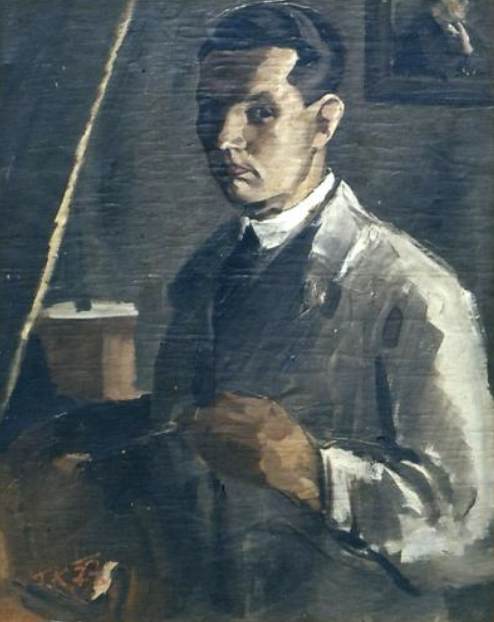

V srednjeveški Škofji Loki, mestu posebne svetlobe in ustvarjalne energije, so navdih skozi stoletja iskali številni umetniki. Med njimi tudi slikar Franc Košir (1906-1939), ki je živel in ustvarjal v Koširjevem mlinu na Kapucinskem trgu 25.

Z domačijo je bil neločljivo povezan in je s svojim pogledom znal ujeti lepoto vsakdanjega trenutka. Bil je mojster akvarela in upodabljanja vode, njegova dela pa odsevajo melanholično lepoto sveta, ki ga je oblikovala prav okolica mlina ob Selški Sori. Na svojih slikah je pogosto upodabljal mlin, reko in življenje ob njej.
Retrospektivno razstavo del Franca Koširja je pospremil zapis Andreja Pavlovca (1929-1995), umetnostnega zgodovinarja, likovnega kritika in dolgoletnega ravnatelja Loškega muzeja:
“Koširjev rod prebiva tu že vsaj 250 let, mlinarstvo pa je na tem mestu izpričano že davno prej. Mlin je stisnjen na ozek prostor med Soro in kapucinsko obzidje in je pomaknjen skoraj pod sam obok Kamnitega mostu. To je bil prva leta tudi ves svet mladega Franceta in so ga poživljali vozniki, ki so dan za dnem vozili v mlin žito. Ti dogodki so otroku predstavljali življenje konj, voz in nemirnega ropotanja mlinskih kamnov. Drug nadvse mikavni svet je predstavljala tik za hišo tekoča in preko jezu humeča Sora, nad jezom vsa umirjena, pod njim pa naenkrat tako drugačna, nemirna: v mirni gladini se je zrcalilo zeleno drevje, a vsa ta mirujoča zelena površina je bila naenkrat prekinjena z rezilom jezu. Kolikokrat je kot študent in zrel slikar vse to kasneje upodobil!”
- Pavlovec, 1960
Koširjevina ni le arhitekturna priča mlinarske preteklosti, temveč eden ključnih simbolov loške identitete - preplet dela, umetnosti in duhovnosti, ki zaznamuje mesto že stoletja. Koširjeva domačija z mlinom ob Kamnitem mostu danes sodi med najbolj prepoznavne vedute Škofje Loke.
Škofjeloški slikar Franc Košir je neločljivo povezan z Muzejskim društvom Škofja Loka, Loškim muzejem in Narodno galerijo v Ljubljani.